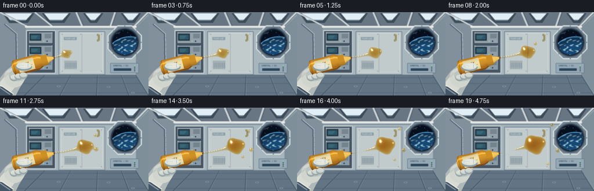
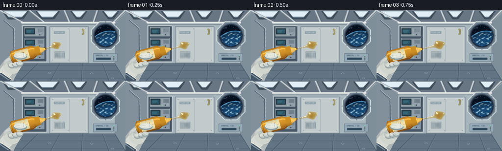

CODING AGENTS AS PIXEL WORLD MODELS
traex/GPT-6.1-Sol · phygen_004
点击播放 · 原生 RGB 像素
此结果可播放，但该运行尚未通过最终提交审核。页面展示不代表评测通过。
逐轮保存的候选
回放视频、检查图与代码变化。
每份候选均可单独播放。实际图片检查记录在下方工具轨迹中。
候选 01播放与检查图
点击播放 · 原生 RGB 像素


展开代码变化
--- 上一保存版本
+++ 本次保存版本
@@ -0,0 +1,363 @@
+"""Procedural, supersampled RGB animation of viscous honey released in microgravity.
+Only numpy/Pillow geometry, shading, and pixel resampling are used.
+"""
+import json
+from pathlib import Path
+import math
+import numpy as np
+from PIL import Image, ImageDraw, ImageFilter, ImageFont
+import artifact_io
+
+ROOT = Path(__file__).resolve().parent
+SPEC = json.loads((ROOT / 'task_spec.json').read_text())
+S = 3
+W, H = SPEC['width'], SPEC['height']
+SW, SH = W*S, H*S
+rng = np.random.default_rng(401)
+
+def font(size):
+ try:
+ return ImageFont.truetype('/usr/share/fonts/truetype/dejavu/DejaVuSans.ttf', round(size*S))
+ except OSError:
+ return ImageFont.load_default()
+
+def polygon(d, xy, fill, outline=None, width=1):
+ p = [(int(x*S), int(y*S)) for x,y in xy]
+ d.polygon(p, fill=fill)
+ if outline:
+ d.line(p+[p[0]], fill=outline, width=max(1,round(width*S)), joint='curve')
+
+def line(d, xy, fill, width=1):
+ d.line([(round(x*S),round(y*S)) for x,y in xy],fill=fill,width=max(1,round(width*S)))
+
+def rect(d,box,fill,outline=None,width=1,radius=0):
+ b=tuple(round(v*S) for v in box)
+ if radius:
+ d.rounded_rectangle(b, radius=round(radius*S),fill=fill,outline=outline,width=max(1,round(width*S)))
+ else:
+ d.rectangle(b,fill=fill,outline=outline,width=max(1,round(width*S)))
+
+def ellipse(d,box,fill,outline=None,width=1):
+ d.ellipse(tuple(round(v*S) for v in box),fill=fill,outline=outline,width=max(1,round(width*S)))
+
+def text(d,xy,string,size,fill):
+ d.text((round(xy[0]*S),round(xy[1]*S)),string,font=font(size),fill=fill)
+
+
+def station():
+ yy,xx=np.mgrid[0:SH,0:SW].astype(np.float32)
+ x,y=xx/S,yy/S
+ illumination=1.0-0.20*((x-140)/210)**2-0.12*(y/144)
+ color=np.stack([170*illumination,184*illumination,193*illumination],-1)
+ grain=rng.normal(0,0.5,(SH,SW,1))
+ im=Image.fromarray(np.uint8(np.clip(color+grain,0,255)))
+ d=ImageDraw.Draw(im)
+ # Receding laboratory architecture, not a terrestrial room.
+ polygon(d,[(0,0),(256,0),(231,26),(47,27)],(104,117,131))
+ polygon(d,[(0,0),(44,26),(44,106),(0,144)],(130,144,156))
+ polygon(d,[(45,25),(234,25),(234,108),(45,108)],(167,181,189))
+ polygon(d,[(235,25),(256,5),(256,140),(234,108)],(126,143,154))
+ polygon(d,[(44,108),(234,108),(256,144),(0,144)],(99,116,132))
+ # Ceiling rails and recessed soft strip lights.
+ for xa,xb in [(3,60),(71,123),(142,179),(207,244)]:
+ polygon(d,[(xa,1),(xb,1),(xb-12,19),(xa+13,19)],(62,76,90),(113,128,138),.6)
+ polygon(d,[(xa+5,2),(xb-5,2),(xb-15,13),(xa+14,13)],(225,238,245))
+ line(d,[(xa+15,14),(xb-16,14)],(147,186,209),.5)
+ for x0 in [0,60,131,198,255]:
+ line(d,[(x0,0),(48+(x0/256)*183,25)],(202,211,214),2.7)
+ line(d,[(x0+3,0),(51+(x0/256)*183,25)],(73,88,101),.6)
+ line(d,[(43,25),(235,25)],(232,235,231),3)
+ line(d,[(44,29),(235,29)],(98,118,129),1)
+ # Equipment bay to the left of center.
+ rect(d,(45,31,96,106),(70,86,101),outline=(198,207,210),width=1.8,radius=2)
+ for k in range(3):
+ y0=34+k*23
+ rect(d,(49,y0,91,y0+20),(147-k*5,160-k*3,170-k*2),outline=(40,59,73),width=.7,radius=.8)
+ rect(d,(51,y0+3,71,y0+15),(32,51,62),radius=.7)
+ rect(d,(53,y0+5,69,y0+13),(46,87,103),radius=.4)
+ for j in range(4):
+ line(d,[(54,y0+7+j*1.4),(65-j,y0+7+j*1.4)],(96,155,168),.35)
+ for j in range(4):
+ line(d,[(77,y0+4+j*2),(88,y0+4+j*2)],(64,81,93),.55)
+ ellipse(d,(74,y0+15,76,y0+17),(149,209,165))
+ ellipse(d,(80,y0+15,82,y0+17),(33,47,58))
+ for cx in [50.5,89.5]:
+ ellipse(d,(cx-.55,y0+.5,cx+.55,y0+1.6),(223,228,224))
+ # Flat stowage surfaces behind the floating fluid.
+ rect(d,(101,33,181,108),(185,196,200),outline=(100,119,131),width=1.0,radius=1)
+ rect(d,(105,36,177,104),(194,203,204),outline=(219,224,221),width=.6,radius=1)
+ line(d,[(141,37),(141,104)],(145,161,169),.7)
+ for y0 in [38,102]:
+ for x0 in [107,139,175]:
+ ellipse(d,(x0-.7,y0-.7,x0+.7,y0+.7),(118,137,148))
+ line(d,[(x0-.4,y0),(x0+.4,y0)],(230,233,225),.25)
+ rect(d,(110,43,132,48),(139,159,167),radius=.5)
+ text(d,(112,43.4),'FLUID LAB',3.2,(220,228,226))
+ rect(d,(111,84,132,98),(169,181,183),outline=(145,160,167),width=.5)
+ for x0 in np.arange(113,131,2.2):
+ line(d,[(x0,87),(x0,96)],(108,130,143),.5)
+ # Yellow station handholds.
+ line(d,[(167,39),(170,39),(170,49),(167,49)],(66,82,91),2.8)
+ line(d,[(167,39),(170,39),(170,49),(167,49)],(212,177,67),1.3)
+ # Porthole bezel with inset glazing and distant Earth.
+ cx,cy=215,52
+ outer=[(cx+31*math.cos(a),cy+31*math.sin(a)) for a in np.arange(8)*math.pi/4+math.pi/8]
+ polygon(d,outer,(114,130,143),(216,226,228),2)
+ ellipse(d,(cx-26,cy-26,cx+26,cy+26),(44,57,71),outline=(89,108,124),width=2)
+ ellipse(d,(cx-22.5,cy-22.5,cx+22.5,cy+22.5),(6,15,30),outline=(28,41,59),width=1)
+ # Pixel-shaded planet is clipped to the circular window.
+ ay,ax=np.mgrid[0:SH,0:SW].astype(np.float32); ax/=S; ay/=S
+ window=(ax-cx)**2+(ay-cy)**2<21.4**2
+ earthdist=np.sqrt(((ax-224)/1.08)**2+(ay-82)**2)
+ emask=window&(earthdist<39)
+ atmosphere=window&(earthdist>=39)&(earthdist<40.2)
+ arr=np.asarray(im).copy()
+ arr[atmosphere]=[90,175,231]
+ a=0.5+0.5*np.sin(ax*.64+np.sin(ay*.9)*1.9+ay*.21)
+ b=0.5+0.5*np.sin(ay*.71+ax*.22+np.sin(ax*.27)*2)
+ cloud=np.clip((a*b-.36)*2.5,0,.85)
+ limb=np.clip((39-earthdist)/14,0,1)
+ ec=np.stack([22+cloud*156,72+cloud*147,116+cloud*112],-1)
+ ec*= (.65+.35*limb[...,None])
+ arr[emask]=np.uint8(ec[emask])
+ im=Image.fromarray(arr); d=ImageDraw.Draw(im)
+ for sx,sy in [(205,37),(220,35),(225,40),(201,44),(212,32)]:
+ ellipse(d,(sx-.2,sy-.2,sx+.2,sy+.2),(183,207,226))
+ # Glazing reflection, ring bolts, lower equipment labels.
+ line(d,[(200,37),(207,34)],(158,183,197),.6)
+ for a in np.arange(8)*math.pi/4:
+ bx=cx+28*math.cos(a); by=cy+28*math.sin(a)
+ ellipse(d,(bx-1,by-1,bx+1,by+1),(80,96,111),outline=(183,197,204),width=.35)
+ rect(d,(190,88,239,105),(148,168,181),outline=(85,106,121),width=.7,radius=1)
+ text(d,(195,90),'ORBITAL / 02',3.6,(40,67,83))
+ rect(d,(196,97,226,101),(44,69,89),radius=.5)
+ for k in range(4):
+ ellipse(d,(231,91+k*3,233,93+k*3),(130,204,180) if k==0 else (74,91,100))
+ # Deck geometry and tie-down fixtures.
+ for x0 in [0,42,103,166,222,256]:
+ line(d,[(46+(x0/256)*188,109),(x0,144)],(62,84,103),1)
+ line(d,[(47+(x0/256)*188,109),(x0+2,144)],(149,165,174),.45)
+ for y0 in [113,123,139]:
+ line(d,[(31-(y0-113)*.9,y0),(238+(y0-113)*.6,y0)],(73,94,109),.8)
+ for cx0,cy0 in [(101,128),(187,129),(229,139)]:
+ ellipse(d,(cx0-3,cy0-1,cx0+3,cy0+1),(47,67,85),outline=(166,179,187),width=.5)
+ # Left wall wiring and ribbed structural posts.
+ line(d,[(8,20),(28,37),(29,112)],(76,93,111),3)
+ line(d,[(9,20),(29,37),(30,112)],(199,212,216),1.1)
+ for y0 in np.arange(43,106,8):
+ line(d,[(26,y0),(31,y0+1)],(98,117,132),.7)
+ return im.filter(ImageFilter.GaussianBlur(.48*S))
+
+BG=station()
+
+def glove(im, phase, foreground=False):
+ """Soft textile glove wraps around the honey bottle, with gentle squeeze."""
+ d=ImageDraw.Draw(im)
+ press=math.sin(min(phase/.84,1)*math.pi/2)*1.4
+ if not foreground:
+ polygon(d,[(-8,145),(-7,123),(9,102),(22,91),(35,94),(48,108),(33,132),(25,148)],(176,184,183))
+ polygon(d,[(-8,138),(1,119),(14,104),(25,99),(39,104),(34,119),(17,140)],(215,219,211))
+ ellipse(d,(7,96,42,130),(208,213,205))
+ ellipse(d,(15,99,46,119),(187,196,193))
+ polygon(d,[(-6,127),(5,129),(22,141),(18,151),(-7,151)],(69,86,102))
+ line(d,[(-2,129),(17,142)],(132,151,163),2)
+ line(d,[(1,126),(23,141)],(228,231,220),1.8)
+ for j in range(4):
+ line(d,[(5+j*1.5,112),(13+j*1.5,104)],(161,174,175),.4)
+ else:
+ # Fingers fold around the lower edge; thumb visibly presses the shoulder.
+ for i in range(3):
+ cx=24+i*8; cy=113-i*2
+ ellipse(d,(cx-7,cy-5,cx+7,cy+6),(155,168,171))
+ ellipse(d,(cx-6,cy-5,cx+6,cy+3),(217-i*4,222-i*3,213-i*2))
+ line(d,[(cx-4,cy+1),(cx+3,cy+2)],(170,183,183),.6)
+ ellipse(d,(27,88+press,55,101+press),(140,159,164))
+ ellipse(d,(28,86.5+press,54,98+press),(219,223,213))
+ ellipse(d,(33,88+press,52,95.5+press),(230,232,222))
+ line(d,[(32,92+press),(37,91+press),(41,92+press)],(180,191,189),.5)
+ line(d,[(48,89+press),(48,95+press)],(163,179,180),.6)
+
+
+def bottle(im,phase):
+ # An axis-aligned parametric squeeze bottle is rotated toward the suspended liquid.
+ yy,xx=np.mgrid[0:SH,0:SW].astype(np.float32)
+ x,y=xx/S,yy/S
+ a=np.array([.967,-.255],np.float32)
+ b=np.array([.255,.967],np.float32)
+ retreat=max(0,phase-.83)*5
+ ox,oy=76-retreat,83+.15*retreat
+ u=(x-ox)*a[0]+(y-oy)*a[1]
+ v=(x-ox)*b[0]+(y-oy)*b[1]
+ compression=1.4*np.sin(min(phase/.86,1)*math.pi/2)
+ baseR=13.6-compression*np.exp(-((u+29)/15)**2)
+ end=np.clip((u+57)/6,0,1)
+ r=baseR*np.sqrt(np.clip(1-(1-end)**2,0,1))
+ r*=np.where(u>-11,np.clip(1-(u+11)*.037,.62,1),1)
+ body=(u>-57)&(u<-3)&(abs(v)<r)
+ q=np.clip(v/(r+1e-5),-1,1)
+ nz=np.sqrt(np.clip(1-q*q,0,1))
+ lam=np.clip(nz*.82-q*.32,.10,1)
+ rgba=np.zeros((SH,SW,4),np.uint8)
+ c=np.stack([118+113*lam,65+99*lam,17+29*lam],-1)
+ # Honey seen through semitransparent flexible plastic.
+ shine=np.exp(-((q+.57)/.10)**2)*(52+9*np.cos(u*.15))
+ c+=shine[...,None]*np.array([1,.95,.68])
+ c+=np.exp(-((q-.74)/.035)**2)[...,None]*np.array([28,24,12])
+ c-=np.exp(-((u+53)/1.2)**2)[...,None]*np.array([31,23,12])
+ rgba[body,:3]=np.uint8(np.clip(c[body],0,255)); rgba[body,3]=255
+ # Pale cream front label conforms to the curved bottle.
+ label=body&(u>-46)&(u<-18)&(abs(v)<r*.76)
+ label_light=.64+.36*nz
+ lc=np.stack([241*label_light,225*label_light,170*label_light],-1)
+ rgba[label,:3]=np.uint8(lc[label])
+ # Molded neck and warm yellow threaded closure.
+ cap=(u>=-5)&(u<5.5)&(abs(v)<9.2)
+ capShade=np.clip(.82+.2*np.sqrt(np.maximum(0,1-(v/9.2)**2))-.13*v/9.2,0,1)
+ ribs=(.5+.5*np.cos(u*5.3))
+ cc=np.stack([194*capShade+24*ribs,134*capShade+17*ribs,34*capShade+5*ribs],-1)
+ rgba[cap,:3]=np.uint8(np.clip(cc[cap],0,255));rgba[cap,3]=255
+ nr=6.6-(u-5.5)*.41
+ nozzle=(u>=5.5)&(u<18.3)&(abs(v)<nr)
+ nq=v/np.maximum(nr,1)
+ nc=np.stack([191+53*np.sqrt(np.maximum(0,1-nq*nq)),135+65*np.sqrt(np.maximum(0,1-nq*nq)),49+47*np.sqrt(np.maximum(0,1-nq*nq))],-1)
+ nc+=np.exp(-((nq+.48)/.10)**2)[...,None]*np.array([12,20,19])
+ rgba[nozzle,:3]=np.uint8(np.clip(nc[nozzle],0,255));rgba[nozzle,3]=255
+ lip=(u>17.1)&(u<18.7)&(abs(v)<2.0)
+ rgba[lip,:3]=[117,66,17];rgba[lip,3]=255
+ im.alpha_composite(Image.fromarray(rgba))
+ # The bottle's printed label, rotated with its long axis.
+ li=Image.new('RGBA',(28*S,19*S),(0,0,0,0));ld=ImageDraw.Draw(li)
+ ld.text((2*S,4*S),'HONEY',font=font(5.0),fill=(77,49,19,255))
+ ld.line([(3*S,11*S),(25*S,11*S)],fill=(149,111,44,255),width=1)
+ ld.text((6*S,12*S),'PURE',font=font(2.6),fill=(112,81,33,255))
+ rot=li.rotate(14.75,resample=Image.Resampling.BICUBIC,expand=True)
+ center=(ox-32*a[0],oy-32*a[1])
+ im.alpha_composite(rot,(round(center[0]*S-rot.width/2),round(center[1]*S-rot.height/2)))
+
+
+def honey_components(t):
+ # Extrusion increases volume. Slow neck thinning and radial drifting replace falling.
+ cx=114+40*(1-np.exp(-2.4*t))
+ cy=72-9*t
+ r=7.0+7.1*t
+ comps=[]
+ # A long, thin viscous bridge, with smooth bends and slight tension oscillation.
+ tipx=93.7-max(0,t-.83)*5
+ tipy=78.3+max(0,t-.83)*.75
+ length=cx-tipx
+ n=max(7,int(length/4)+1)
+ for k in range(n):
+ s=k/(n-1)
+ px=tipx+s*length
+ py=tipy+s*(cy-tipy)+1.9*math.sin(math.pi*s)*math.sin(t*2.2)
+ rad=2.1+1.2*s*s
+ # Pinch off near the nozzle late in the release, no downwards flow.
+ pinching=np.clip((t-.73)/.23,0,1)
+ rad*=1-.965*pinching*math.exp(-((s-.27)/.17)**2)
+ if rad>.45:
+ comps.append((px,py,rad,.78))
+ comps.append((cx,cy,r,1.0))
+ # Smoothly evolving globular lobes of a cohesive viscous liquid.
+ comps.append((cx+7+7*t,cy-3+2*math.sin(t*3),3.4+5.1*t,.87))
+ comps.append((cx+3+5*t,cy+4+7*t,2.8+3.9*t,.73))
+ comps.append((cx-4,cy-4-4*t,2.8+3*t,.58))
+ # Satellite beads grow at the rim before drifting outward in different directions.
+ for birth,dx,dy,vx,vy,rr in [(.27,11,-9,22,-24,3.25),(.44,15,3,28,8,3.9),(.58,9,11,17,23,2.8)]:
+ age=(t-birth)/(1-birth)
+ if age>0:
+ growth=min(1,age*5)
+ comps.append((cx+dx+vx*age,cy+dy+vy*age,rr*growth,.96))
+ return comps
+
+
+def bilinear(arr,x,y):
+ hh,ww=arr.shape[:2]
+ x=np.clip(x,0,ww-1.001);y=np.clip(y,0,hh-1.001)
+ x0=x.astype(np.int32);y0=y.astype(np.int32)
+ fx=(x-x0)[...,None];fy=(y-y0)[...,None]
+ return ((arr[y0,x0]*(1-fx)+arr[y0,x0+1]*fx)*(1-fy)+(arr[y0+1,x0]*(1-fx)+arr[y0+1,x0+1]*fx)*fy)
+
+
+def honey(im,t):
+ source=np.asarray(im.convert('RGB')).astype(np.float32)
+ # Ray intersections with a three-dimensional Gaussian metaball surface.
+ x0,y0,x1,y1=87,20,207,108
+ gy,gx=np.mgrid[y0*S:y1*S,x0*S:x1*S].astype(np.float32)
+ xx,yy=gx/S,gy/S
+ cs=honey_components(t)
+ invr=np.array([1/(c[2]**2) for c in cs],dtype=np.float32)
+ dx=np.array([xx-c[0] for c in cs]);dy=np.array([yy-c[1] for c in cs])
+ base=np.exp(-(dx*dx+dy*dy)*invr[:,None,None])*np.array([c[3] for c in cs],np.float32)[:,None,None]
+ thresh=np.float32(math.exp(-1))
+ fmid=base.sum(0)
+ inside=fmid>thresh
+ lo=np.zeros(xx.shape,np.float32);hi=np.full(xx.shape,26,np.float32)
+ for _ in range(13):
+ z=(lo+hi)*.5
+ f=np.sum(base*np.exp(-z[None,:,:]**2*invr[:,None,None]),0)
+ hit=f>thresh
+ lo=np.where(hit,z,lo);hi=np.where(hit,hi,z)
+ z=(lo+hi)*.5
+ weights=base*np.exp(-z[None,:,:]**2*invr[:,None,None])*invr[:,None,None]
+ nx=(weights*dx).sum(0);ny=(weights*dy).sum(0);nz=weights.sum(0)*z
+ norm=np.sqrt(nx*nx+ny*ny+nz*nz)+1e-6
+ nx/=norm;ny/=norm;nz/=norm
+ # Refraction of the cabin behind each curved fluid surface.
+ rx=gx-nx*z*S*.78/(.45+nz)
+ ry=gy-ny*z*S*.78/(.45+nz)
+ transmitted=bilinear(source,rx,ry)
+ thickness=z*2
+ absorption=np.exp(-thickness[...,None]*np.array([.0105,.035,.095],np.float32))
+ liquid=transmitted*absorption
+ # Warm subsurface illumination preserves the clear amber hue.
+ scatter=np.array([155,96,20],np.float32)[None,None,:]*(1-absorption)*.34
+ liquid+=scatter
+ fresnel=.033+.90*(1-nz)**5
+ env=np.stack([131+65*(1-ny)/2,153+57*(1-ny)/2,174+49*(1-ny)/2],-1)
+ liquid=liquid*(1-fresnel[...,None])+env*fresnel[...,None]
+ # Broad overhead light, and sharp studio-like streaks from station light strips.
+ h1=np.array([-.35,-.42,.837],np.float32);h1/=np.linalg.norm(h1)
+ d1=np.clip(nx*h1[0]+ny*h1[1]+nz*h1[2],0,1)
+ spec=d1**115*.97+d1**26*.15
+ h2=np.array([.60,-.21,.77],np.float32);h2/=np.linalg.norm(h2)
+ d2=np.clip(nx*h2[0]+ny*h2[1]+nz*h2[2],0,1)
+ spec+=d2**150*.5
+ liquid+=spec[...,None]*np.array([252,248,228],np.float32)
+ # Bright narrow transmitted rim and a dark amber contour define depth.
+ rim=(1-nz)**2
+ liquid+=rim[...,None]*np.array([17,5,-6],np.float32)
+ # Few air bubbles suspended inside the central glob, refracted and softly shaded.
+ main=cs[-7] if False else (114+40*(1-np.exp(-2.4*t)),72-9*t)
+ for bx,by,br in [(main[0]+2,main[1]+3,1.0),(main[0]+6,main[1]-2,.56),(main[0]-3,main[1]+5,.36)]:
+ dist=np.sqrt((xx-bx)**2+(yy-by)**2)
+ ring=np.exp(-((dist-br)/.16)**2)*.15
+ bubble_high=np.exp(-(((xx-bx+.33)**2+(yy-by+.34)**2)/(.25**2)))*24
+ liquid=liquid*(1-ring[...,None])+bubble_high[...,None]*np.array([1,.85,.5])
+ # Analytic edge antialiasing on top of 3x supersampling.
+ gxfield=-2*(base*dx*invr[:,None,None]).sum(0)
+ gyfield=-2*(base*dy*invr[:,None,None]).sum(0)
+ grad=np.sqrt(gxfield**2+gyfield**2)+1e-7
+ edge=np.clip(.5+(fmid-thresh)/grad*S,0,1)
+ region=source[y0*S:y1*S,x0*S:x1*S]
+ blend=region*(1-edge[...,None])+np.clip(liquid,0,255)*edge[...,None]
+ source[y0*S:y1*S,x0*S:x1*S]=blend
+ return Image.fromarray(np.uint8(np.clip(source,0,255)))
+
+
+def render(i):
+ t=i/(SPEC['frames']-1)
+ im=BG.copy().convert('RGBA')
+ glove(im,t,False)
+ bottle(im,t)
+ glove(im,t,True)
+ im=honey(im,t)
+ im=im.resize((W,H),Image.Resampling.LANCZOS)
+ return np.asarray(im,dtype=np.uint8)
+
+if __name__=='__main__':
+ frames=[]
+ for i in range(SPEC['frames']):
+ frames.append(render(i))
+ print(f'Rendered frame {i+1}/{SPEC["frames"]}',flush=True)
+ artifact_io.save(np.stack(frames),ROOT)
+ print('Saved RGB video artifacts.',flush=True)
可观测工具轨迹
实际执行的命令与返回图片。
命令 1exit 0
/bin/bash -lc 'ls -la && cat prompt.txt && cat GENERATION_RULES.md && cat task_spec.json'
命令 2exit 0
/bin/bash -lc "cat artifact_io.py && python - <<'PY'
import numpy, PIL
print('numpy',numpy.__version__)
PY"命令 3exit 0
/bin/bash -lc "cat > generate.py <<'PY'
\"\"\"Procedural, supersampled RGB animation of viscous honey released in microgravity.
Only numpy/Pillow geometry, shading, and pixel resampling are used.
\"\"\"
import json
from pathlib import Path
import math
import numpy as np
from PIL import Image, ImageDraw, ImageFilter, ImageFont
import artifact_io
ROOT = Path(__file__).resolve().parent
SPEC = json.loads((ROOT / 'task_spec.json').read_text())
S = 3
W, H = SPEC['width'], SPEC['height']
SW, SH = W*S, H*S
rng = np.random.default_rng(401)
def font(size):
try:
return ImageFont.truetype('/usr/share/fonts/truetype/dejavu/DejaVuSans.ttf', round(size*S))
except OSError:
return ImageFont.load_default()
def polygon(d, xy, fill, outline=None, width=1):
p = [(int(x*S), int(y*S)) for x,y in xy]
d.polygon(p, fill=fill)
if outline:
d.line(p+[p[0]], fill=outline, width=max(1,round(width*S)), joint='curve')
def line(d, xy, fill, width=1):
d.line([(round(x*S),round(y*S)) for x,y in xy],fill=fill,width=max(1,round(width*S)))
def rect(d,box,fill,outline=None,width=1,radius=0):
b=tuple(round(v*S) for v in box)
if radius:
d.rounded_rectangle(b, radius=round(radius*S),fill=fill,outline=outline,width=max(1,round(width*S)))
else:
d.rectangle(b,fill=fill,outline=outline,width=max(1,round(width*S)))
def ellipse(d,box,fill,outline=None,width=1):
d.ellipse(tuple(round(v*S) for v in box),fill=fill,outline=outline,width=max(1,round(width*S)))
def text(d,xy,string,size,fill):
d.text((round(xy[0]*S),round(xy[1]*S)),string,font=font(size),fill=fill)
def station():
yy,xx=np.mgrid[0:SH,0:SW].astype(np.float32)
x,y=xx/S,yy/S
illumination=1.0-0.20*((x-140)/210)**2-0.12*(y/144)
color=np.stack([170*illumination,184*illumination,193*illumination],-1)
grain=rng.normal(0,0.5,(SH,SW,1))
im=Image.fromarray(np.uint8(np.clip(color+grain,0,255)))
d=ImageDraw.Draw(im)
# Receding laboratory architecture, not a terrestrial room.
polygon(d,[(0,0),(256,0),(231,26),(47,27)],(104,117,131))
polygon(d,[(0,0),(44,26),(44,106),(0,144)],(130,144,156))
polygon(d,[(45,25),(234,25),(234,108),(45,108)],(167,181,189))
polygon(d,[(235,25),(256,5),(256,140),(234,108)],(126,143,154))
polygon(d,[(44,108),(234,108),(256,144),(0,144)],(99,116,132))
# Ceiling rails and recessed soft strip lights.
for xa,xb in [(3,60),(71,123),(142,179),(207,244)]:
polygon(d,[(xa,1),(xb,1),(xb-12,19),(xa+13,19)],(62,76,90),(113,128,138),.6)
polygon(d,[(xa+5,2),(xb-5,2),(xb-15,13),(xa+14,13)],(225,238,245))
line(d,[(xa+15,14),(xb-16,14)],(147,186,209),.5)
for x0 in [0,60,131,198,255]:
line(d,[(x0,0),(48+(x0/256)*183,25)],(202,211,214),2.7)
line(d,[(x0+3,0),(51+(x0/256)*183,25)],(73,88,101),.6)
line(d,[(43,25),(235,25)],(232,235,231),3)
line(d,[(44,29),(235,29)],(98,118,129),1)
# Equipment bay to the left of center.
rect(d,(45,31,96,106),(70,86,101),outline=(198,207,210),width=1.8,radius=2)
for k in range(3):
y0=34+k*23
rect(d,(49,y0,91,y0+20),(147-k*5,160-k*3,170-k*2),outline=(40,59,73),width=.7,radius=.8)
rect(d,(51,y0+3,71,y0+15),(32,51,62),radius=.7)
rect(d,(53,y0+5,69,y0+13),(46,87,103),radius=.4)
for j in range(4):
line(d,[(54,y0+7+j*1.4),(65-j,y0+7+j*1.4)],(96,155,168),.35)
for j in range(4):
line(d,[(77,y0+4+j*2),(88,y0+4+j*2)],(64,81,93),.55)
ellipse(d,(74,y0+15,76,y0+17),(149,209,165))
ellipse(d,(80,y0+15,82,y0+17),(33,47,58))
for cx in [50.5,89.5]:
ellipse(d,(cx-.55,y0+.5,cx+.55,y0+1.6),(223,228,224))
# Flat stowage surfaces behind the floating fluid.
rect(d,(101,33,181,108),(185,196,200),outline=(100,119,131),width=1.0,radius=1)
rect(d,(105,36,177,104),(194,203,204),outline=(219,224,221),width=.6,radius=1)
line(d,[(141,37),(141,104)],(145,161,169),.7)
for y0 in [38,102]:
for x0 in [107,139,175]:
ellipse(d,(x0-.7,y0-.7,x0+.7,y0+.7),(118,137,148))
line(d,[(x0-.4,y0),(x0+.4,y0)],(230,233,225),.25)
rect(d,(110,43,132,48),(139,159,167),radius=.5)
text(d,(112,43.4),'FLUID LAB',3.2,(220,228,226))
rect(d,(111,84,132,98),(169,181,183),outline=(145,160,167),width=.5)
for x0 in np.arange(113,131,2.2):
line(d,[(x0,87),(x0,96)],(108,130,143),.5)
# Yellow station handholds.
line(d,[(167,39),(170,39),(170,49),(167,49)],(66,82,91),2.8)
line(d,[(167,39),(170,39),(170,49),(167,49)],(212,177,67),1.3)
# Porthole bezel with inset glazing and distant Earth.
cx,cy=215,52
outer=[(cx+31*math.cos(a),cy+31*math.sin(a)) for a in np.arange(8)*math.pi/4+math.pi/8]
polygon(d,outer,(114,130,143),(216,226,228),2)
ellipse(d,(cx-26,cy-26,cx+26,cy+26),(44,57,71),outline=(89,108,124),width=2)
ellipse(d,(cx-22.5,cy-22.5,cx+22.5,cy+22.5),(6,15,30),outline=(28,41,59),width=1)
# Pixel-shaded planet is clipped to the circular window.
ay,ax=np.mgrid[0:SH,0:SW].astype(np.float32); ax/=S; ay/=S
window=(ax-cx)**2+(ay-cy)**2<21.4**2
earthdist=np.sqrt(((ax-224)/1.08)**2+(ay-82)**2)
emask=window&(earthdist<39)
atmosphere=window&(earthdist>=39)&(earthdist<40.2)
arr=np.asarray(im).copy()
arr[atmosphere]=[90,175,231]
a=0.5+0.5*np.sin(ax*.64+np.sin(ay*.9)*1.9+ay*.21)
b=0.5+0.5*np.sin(ay*.71+ax*.22+np.sin(ax*.27)*2)
cloud=np.clip((a*b-.36)*2.5,0,.85)
limb=np.clip((39-earthdist)/14,0,1)
ec=np.stack([22+cloud*156,72+cloud*147,116+cloud*112],-1)
ec*= (.65+.35*limb[...,None])
arr[emask]=np.uint8(ec[emask])
im=Image.fromarray(arr); d=ImageDraw.Draw(im)
for sx,sy in [(205,37),(220,35),(225,40),(201,44),(212,32)]:
ellipse(d,(sx-.2,sy-.2,sx+.2,sy+.2),(183,207,226))
# Glazing reflection, ring bolts, lower equipment labels.
line(d,[(200,37),(207,34)],(158,183,197),.6)
for a in np.arange(8)*math.pi/4:
bx=cx+28*math.cos(a); by=cy+28*math.sin(a)
ellipse(d,(bx-1,by-1,bx+1,by+1),(80,96,111),outline=(183,197,204),width=.35)
rect(d,(190,88,239,105),(148,168,181),outline=(85,106,121),width=.7,radius=1)
text(d,(195,90),'ORBITAL / 02',3.6,(40,67,83))
rect(d,(196,97,226,101),(44,69,89),radius=.5)
for k in range(4):
ellipse(d,(231,91+k*3,233,93+k*3),(130,204,180) if k==0 else (74,91,100))
# Deck geometry and tie-down fixtures.
for x0 in [0,42,103,166,222,256]:
line(d,[(46+(x0/256)*188,109),(x0,144)],(62,84,103),1)
line(d,[(47+(x0/256)*188,109),(x0+2,144)],(149,165,174),.45)
for y0 in [113,123,139]:
line(d,[(31-(y0-113)*.9,y0),(238+(y0-113)*.6,y0)],(73,94,109),.8)
for cx0,cy0 in [(101,128),(187,129),(229,139)]:
ellipse(d,(cx0-3,cy0-1,cx0+3,cy0+1),(47,67,85),outline=(166,179,187),width=.5)
# Left wall wiring and ribbed structural posts.
line(d,[(8,20),(28,37),(29,112)],(76,93,111),3)
line(d,[(9,20),(29,37),(30,112)],(199,212,216),1.1)
for y0 in np.arange(43,106,8):
line(d,[(26,y0),(31,y0+1)],(98,117,132),.7)
return im.filter(ImageFilter.GaussianBlur(.48*S))
BG=station()
def glove(im, phase, foreground=False):
\"\"\"Soft textile glove wraps around the honey bottle, with gentle squeeze.\"\"\"
d=ImageDraw.Draw(im)
press=math.sin(min(phase/.84,1)*math.pi/2)*1.4
if not foreground:
polygon(d,[(-8,145),(-7,123),(9,102),(22,91),(35,94),(48,108),(33,132),(25,148)],(176,184,183))
polygon(d,[(-8,138),(1,119),(14,104),(25,99),(39,104),(34,119),(17,140)],(215,219,211))
ellipse(d,(7,96,42,130),(208,213,205))
ellipse(d,(15,99,46,119),(187,196,193))
polygon(d,[(-6,127),(5,129),(22,141),(18,151),(-7,151)],(69,86,102))
line(d,[(-2,129),(17,142)],(132,151,163),2)
line(d,[(1,126),(23,141)],(228,231,220),1.8)
for j in range(4):
line(d,[(5+j*1.5,112),(13+j*1.5,104)],(161,174,175),.4)
else:
# Fingers fold around the lower edge; thumb visibly presses the shoulder.
for i in range(3):
cx=24+i*8; cy=113-i*2
ellipse(d,(cx-7,cy-5,cx+7,cy+6),(155,168,171))
ellipse(d,(cx-6,cy-5,cx+6,cy+3),(217-i*4,222-i*3,213-i*2))
line(d,[(cx-4,cy+1),(cx+3,cy+2)],(170,183,183),.6)
ellipse(d,(27,88+press,55,101+press),(140,159,164))
ellipse(d,(28,86.5+press,54,98+press),(219,223,213))
ellipse(d,(33,88+press,52,95.5+press),(230,232,222))
line(d,[(32,92+press),(37,91+press),(41,92+press)],(180,191,189),.5)
line(d,[(48,89+press),(48,95+press)],(163,179,180),.6)
def bottle(im,phase):
# An axis-aligned parametric squeeze bottle is rotated toward the suspended liquid.
yy,xx=np.mgrid[0:SH,0:SW].astype(np.float32)
x,y=xx/S,yy/S
a=np.array([.967,-.255],np.float32)
b=np.array([.255,.967],np.float32)
retreat=max(0,phase-.83)*5
ox,oy=76-retreat,83+.15*retreat
u=(x-ox)*a[0]+(y-oy)*a[1]
v=(x-ox)*b[0]+(y-oy)*b[1]
compression=1.4*np.sin(min(phase/.86,1)*math.pi/2)
baseR=13.6-compression*np.exp(-((u+29)/15)**2)
end=np.clip((u+57)/6,0,1)
r=baseR*np.sqrt(np.clip(1-(1-end)**2,0,1))
r*=np.where(u>-11,np.clip(1-(u+11)*.037,.62,1),1)
body=(u>-57)&(u<-3)&(abs(v)<r)
q=np.clip(v/(r+1e-5),-1,1)
nz=np.sqrt(np.clip(1-q*q,0,1))
lam=np.clip(nz*.82-q*.32,.10,1)
rgba=np.zeros((SH,SW,4),np.uint8)
c=np.stack([118+113*lam,65+99*lam,17+29*lam],-1)
# Honey seen through semitransparent flexible plastic.
shine=np.exp(-((q+.57)/.10)**2)*(52+9*np.cos(u*.15))
c+=shine[...,None]*np.array([1,.95,.68])
c+=np.exp(-((q-.74)/.035)**2)[...,None]*np.array([28,24,12])
c-=np.exp(-((u+53)/1.2)**2)[...,None]*np.array([31,23,12])
rgba[body,:3]=np.uint8(np.clip(c[body],0,255)); rgba[body,3]=255
# Pale cream front label conforms to the curved bottle.
label=body&(u>-46)&(u<-18)&(abs(v)<r*.76)
label_light=.64+.36*nz
lc=np.stack([241*label_light,225*label_light,170*label_light],-1)
rgba[label,:3]=np.uint8(lc[label])
# Molded neck and warm yellow threaded closure.
cap=(u>=-5)&(u<5.5)&(abs(v)<9.2)
capShade=np.clip(.82+.2*np.sqrt(np.maximum(0,1-(v/9.2)**2))-.13*v/9.2,0,1)
ribs=(.5+.5*np.cos(u*5.3))
cc=np.stack([194*capShade+24*ribs,134*capShade+17*ribs,34*capShade+5*ribs],-1)
rgba[cap,:3]=np.uint8(np.clip(cc[cap],0,255));rgba[cap,3]=255
nr=6.6-(u-5.5)*.41
nozzle=(u>=5.5)&(u<18.3)&(abs(v)<nr)
nq=v/np.maximum(nr,1)
nc=np.stack([191+53*np.sqrt(np.maximum(0,1-nq*nq)),135+65*np.sqrt(np.maximum(0,1-nq*nq)),49+47*np.sqrt(np.maximum(0,1-nq*nq))],-1)
nc+=np.exp(-((nq+.48)/.10)**2)[...,None]*np.array([12,20,19])
rgba[nozzle,:3]=np.uint8(np.clip(nc[nozzle],0,255));rgba[nozzle,3]=255
lip=(u>17.1)&(u<18.7)&(abs(v)<2.0)
rgba[lip,:3]=[117,66,17];rgba[lip,3]=255
im.alpha_composite(Image.fromarray(rgba))
# The bottle's printed label, rotated with its long axis.
li=Image.new('RGBA',(28*S,19*S),(0,0,0,0));ld=ImageDraw.Draw(li)
ld.text((2*S,4*S),'HONEY',font=font(5.0),fill=(77,49,19,255))
ld.line([(3*S,11*S),(25*S,11*S)],fill=(149,111,44,255),width=1)
ld.text((6*S,12*S),'PURE',font=font(2.6),fill=(112,81,33,255))
rot=li.rotate(14.75,resample=Image.Resampling.BICUBIC,expand=True)
center=(ox-32*a[0],oy-32*a[1])
im.alpha_composite(rot,(round(center[0]*S-rot.width/2),round(center[1]*S-rot.height/2)))
def honey_components(t):
# Extrusion increases volume. Slow neck thinning and radial drifting replace falling.
cx=114+40*(1-np.exp(-2.4*t))
cy=72-9*t
r=7.0+7.1*t
comps=[]
# A long, thin viscous bridge, with smooth bends and slight tension oscillation.
tipx=93.7-max(0,t-.83)*5
tipy=78.3+max(0,t-.83)*.75
length=cx-tipx
n=max(7,int(length/4)+1)
for k in range(n):
s=k/(n-1)
px=tipx+s*length
py=tipy+s*(cy-tipy)+1.9*math.sin(math.pi*s)*math.sin(t*2.2)
rad=2.1+1.2*s*s
# Pinch off near the nozzle late in the release, no downwards flow.
pinching=np.clip((t-.73)/.23,0,1)
rad*=1-.965*pinching*math.exp(-((s-.27)/.17)**2)
if rad>.45:
comps.append((px,py,rad,.78))
comps.append((cx,cy,r,1.0))
# Smoothly evolving globular lobes of a cohesive viscous liquid.
comps.append((cx+7+7*t,cy-3+2*math.sin(t*3),3.4+5.1*t,.87))
comps.append((cx+3+5*t,cy+4+7*t,2.8+3.9*t,.73))
comps.append((cx-4,cy-4-4*t,2.8+3*t,.58))
# Satellite beads grow at the rim before drifting outward in different directions.
for birth,dx,dy,vx,vy,rr in [(.27,11,-9,22,-24,3.25),(.44,15,3,28,8,3.9),(.58,9,11,17,23,2.8)]:
age=(t-birth)/(1-birth)
if age>0:
growth=min(1,age*5)
comps.append((cx+dx+vx*age,cy+dy+vy*age,rr*growth,.96))
return comps
def bilinear(arr,x,y):
hh,ww=arr.shape[:2]
x=np.clip(x,0,ww-1.001);y=np.clip(y,0,hh-1.001)
x0=x.astype(np.int32);y0=y.astype(np.int32)
fx=(x-x0)[...,None];fy=(y-y0)[...,None]
return ((arr[y0,x0]*(1-fx)+arr[y0,x0+1]*fx)*(1-fy)+(arr[y0+1,x0]*(1-fx)+arr[y0+1,x0+1]*fx)*fy)
def honey(im,t):
source=np.asarray(im.convert('RGB')).astype(np.float32)
# Ray intersections with a three-dimensional Gaussian metaball surface.
x0,y0,x1,y1=87,20,207,108
gy,gx=np.mgrid[y0*S:y1*S,x0*S:x1*S].astype(np.float32)
xx,yy=gx/S,gy/S
cs=honey_components(t)
invr=np.array([1/(c[2]**2) for c in cs],dtype=np.float32)
dx=np.array([xx-c[0] for c in cs]);dy=np.array([yy-c[1] for c in cs])
base=np.exp(-(dx*dx+dy*dy)*invr[:,None,None])*np.array([c[3] for c in cs],np.float32)[:,None,None]
thresh=np.float32(math.exp(-1))
fmid=base.sum(0)
inside=fmid>thresh
lo=np.zeros(xx.shape,np.float32);hi=np.full(xx.shape,26,np.float32)
for _ in range(13):
z=(lo+hi)*.5
f=np.sum(base*np.exp(-z[None,:,:]**2*invr[:,None,None]),0)
hit=f>thresh
lo=np.where(hit,z,lo);hi=np.where(hit,hi,z)
z=(lo+hi)*.5
weights=base*np.exp(-z[None,:,:]**2*invr[:,None,None])*invr[:,None,None]
nx=(weights*dx).sum(0);ny=(weights*dy).sum(0);nz=weights.sum(0)*z
norm=np.sqrt(nx*nx+ny*ny+nz*nz)+1e-6
nx/=norm;ny/=norm;nz/=norm
# Refraction of the cabin behind each curved fluid surface.
rx=gx-nx*z*S*.78/(.45+nz)
ry=gy-ny*z*S*.78/(.45+nz)
transmitted=bilinear(source,rx,ry)
thickness=z*2
absorption=np.exp(-thickness[...,None]*np.array([.0105,.035,.095],np.float32))
liquid=transmitted*absorption
# Warm subsurface illumination preserves the clear amber hue.
scatter=np.array([155,96,20],np.float32)[None,None,:]*(1-absorption)*.34
liquid+=scatter
fresnel=.033+.90*(1-nz)**5
env=np.stack([131+65*(1-ny)/2,153+57*(1-ny)/2,174+49*(1-ny)/2],-1)
liquid=liquid*(1-fresnel[...,None])+env*fresnel[...,None]
# Broad overhead light, and sharp studio-like streaks from station light strips.
h1=np.array([-.35,-.42,.837],np.float32);h1/=np.linalg.norm(h1)
d1=np.clip(nx*h1[0]+ny*h1[1]+nz*h1[2],0,1)
spec=d1**115*.97+d1**26*.15
h2=np.array([.60,-.21,.77],np.float32);h2/=np.linalg.norm(h2)
d2=np.clip(nx*h2[0]+ny*h2[1]+nz*h2[2],0,1)
spec+=d2**150*.5
liquid+=spec[...,None]*np.array([252,248,228],np.float32)
# Bright narrow transmitted rim and a dark amber contour define depth.
rim=(1-nz)**2
liquid+=rim[...,None]*np.array([17,5,-6],np.float32)
# Few air bubbles suspended inside the central glob, refracted and softly shaded.
main=cs[-7] if False else (114+40*(1-np.exp(-2.4*t)),72-9*t)
for bx,by,br in [(main[0]+2,main[1]+3,1.0),(main[0]+6,main[1]-2,.56),(main[0]-3,main[1]+5,.36)]:
dist=np.sqrt((xx-bx)**2+(yy-by)**2)
ring=np.exp(-((dist-br)/.16)**2)*.15
bubble_high=np.exp(-(((xx-bx+.33)**2+(yy-by+.34)**2)/(.25**2)))*24
liquid=liquid*(1-ring[...,None])+bubble_high[...,None]*np.array([1,.85,.5])
# Analytic edge antialiasing on top of 3x supersampling.
gxfield=-2*(base*dx*invr[:,None,None]).sum(0)
gyfield=-2*(base*dy*invr[:,None,None]).sum(0)
grad=np.sqrt(gxfield**2+gyfield**2)+1e-7
edge=np.clip(.5+(fmid-thresh)/grad*S,0,1)
region=source[y0*S:y1*S,x0*S:x1*S]
blend=region*(1-edge[...,None])+np.clip(liquid,0,255)*edge[...,None]
source[y0*S:y1*S,x0*S:x1*S]=blend
return Image.fromarray(np.uint8(np.clip(source,0,255)))
def render(i):
t=i/(SPEC['frames']-1)
im=BG.copy().convert('RGBA')
glove(im,t,False)
bottle(im,t)
glove(im,t,True)
im=honey(im,t)
im=im.resize((W,H),Image.Resampling.LANCZOS)
return np.asarray(im,dtype=np.uint8)
if __name__=='__main__':
frames=[]
for i in range(SPEC['frames']):
frames.append(render(i))
print(f'Rendered frame {i+1}/{SPEC[\"frames\"]}',flush=True)
artifact_io.save(np.stack(frames),ROOT)
print('Saved RGB video artifacts.',flush=True)
PY
python generate.py"命令 4exit 0
/bin/bash -lc "python - <<'PY'
from pathlib import Path
import numpy as np
from PIL import Image
p=np.load('pixels.npz')['pixels']
fs=sorted(Path('frames').glob('*.png'))
assert p.shape==(144,256,20)
assert len(fs)==20
for f in fs:
im=Image.open(f)
assert im.size==(256,144) and im.mode=='RGB'
print('Verified:',len(fs),'RGB frames, 256Ã144; packed tensor:',p.shape)
print('Files:', ', '.join(p.name for p in Path('.').iterdir() if p.is_file()))
PY
command -v ffmpeg || true"保存候选 1 份；完成命令 4 次；可验证图片返回 0 张。原始 API 响应与完整日志保留在本地。